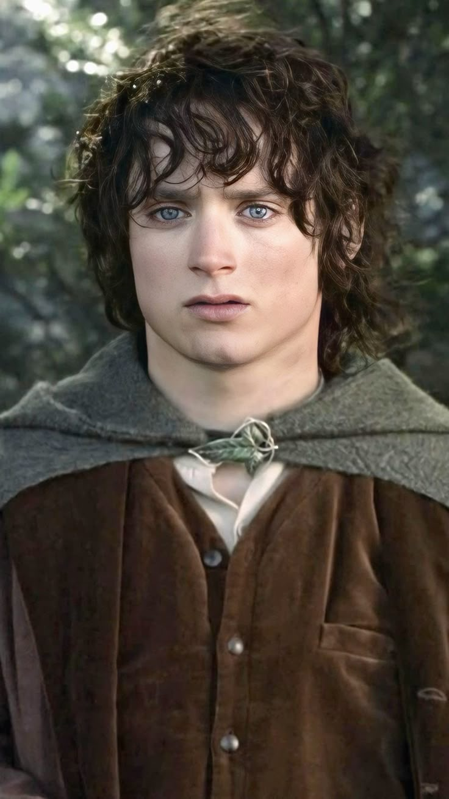
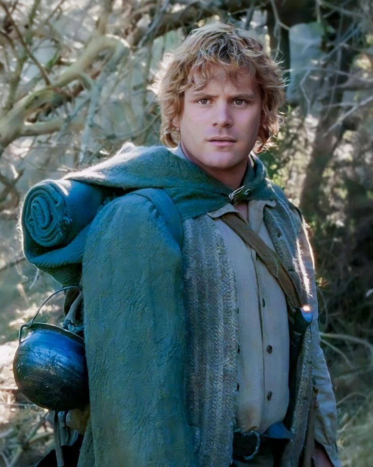
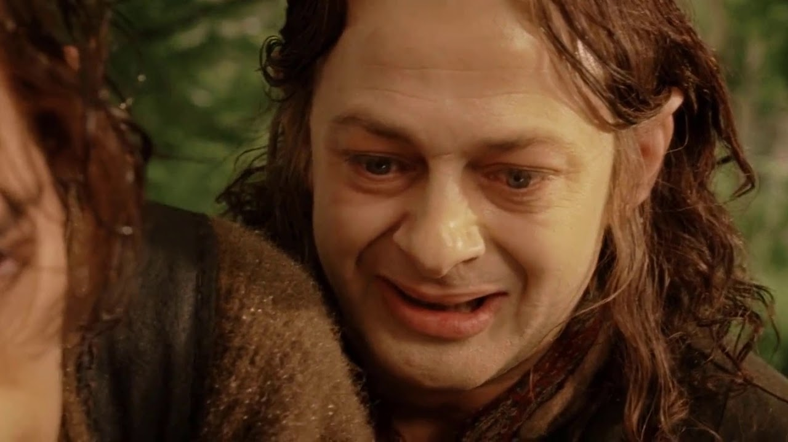
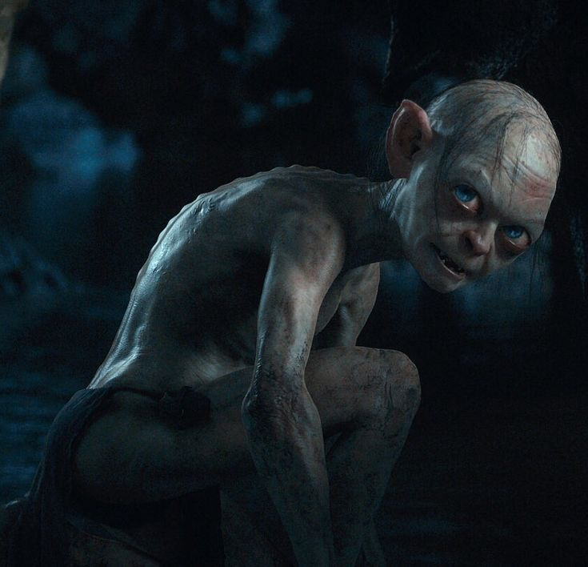

Бильбо Бэггинс — хоббит из Шира, главный герой трилогии «Хоббит».
Именно его путешествие к Одинокой горе становится началом больших событий в истории Средиземья.

Фродо Бэггинс — племянник Бильбо и носитель Кольца Всевластия.
Его путь в Мордор становится центральной линией трилогии «Властелин колец».

Сэмвайз Гэмджи — верный друг Фродо, один из самых преданных и мужественных героев истории Средиземья.

Смеагол — хоббит, живший задолго до событий «Властелина колец».
Найдя Кольцо Всевластия, он поддался его влиянию и постепенно изменился,
утратив свою прежнюю сущность.

Голлум — существо, в которое превратился Смеагол под воздействием Кольца.
Он одержим «прелестью» и играет важную роль в судьбе Фродо и уничтожении Кольца.